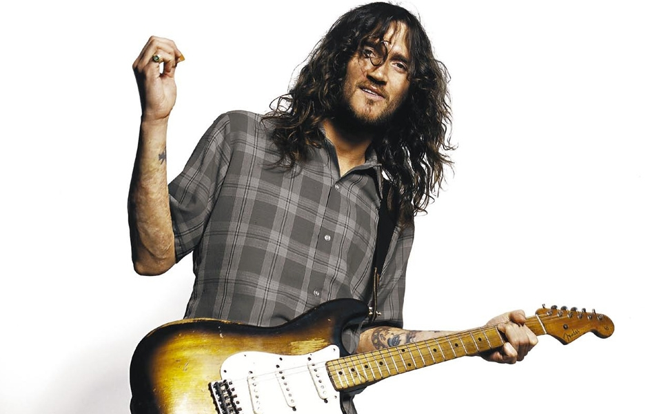

Pamiętam dzień, gdy pocztą dostałem mój pierwszy CD Red Hot Chili Peppers. Tytuł Blood Sugar Sex Magic trochę mnie przeraził, więc zamówiłem Greatest Hits. Słuchałem jak młody lew smakujący swoją pierwszą gazelę: szarpiąc Californicatrion, wysysając szpik z Otherside, wydłubując Scar Tissue z zębów. Chilis łączyli surowe, krwiste emocje ze słodkimi, błyskotliwymi refrenami. John Frusciante spinał uczucia z mistrzowską grą. Jego zwodniczo proste riffy ociekały niewinnością i doświadczeniem. Młodość nigdy nie smakowała lepiej.
Dekadę później rozmawiam przez telefon z rzecznikiem prasowym człowieka, którego wielu uważa za najlepszego współczesnego gitarzystę. „Jeśli chcesz by Frusciante był zadowolony, jest jeden temat którego powinieneś unikać: Red Hot Chili Peppers”.
Burzliwość związku Frusciante z Chi Peps jest legendarna. Rzucił zespół w 1992 „zjeżony” jego popularnością. Zmagał się z uzależnieniem i depresją przez lata zanim ponownie dołączył do grupy w 1998 by nagrać Californication i znów porzucił ją w 2009 roku. Wtedy zniknął z radarów niemal całego świata. Ale jego kreatywność bynajmniej nie osłabła: w ciągu ostatnich trzech lat wyprodukował album dla towarzyszy Wu-Tang – Black Knights i nagrał trzy albumy solowe – jeden dziwniejszy od poprzedniego. Najnowszy Enclosure wyszedł w kwietniu tego roku. Zawiera drum& Bass, hip-hop, szybkie „pochody” automatów perkusyjnych, mroczne sample, bębny a`la lata 80., charakterystyczny falset i zdrową dawkę shreddingu. Wszystko to najlepiej widać w Fanfare. Frusciante zawodzi i nuci na tle chóru, epickich „Italo” syntetyzatorów i perkusji w stylu lat 80. zamykając całość przestrzennym solo. To bez wątpienia najdziwniejsza muzyka kogokolwiek z członków Rock and Roll Hall of Fame.
Hasło „Frusciante bóg gitary” daje 73 tysiące wyników w wyszukiwarce Google. Dla większości ludzi zawsze pozostanie tym prześlicznym, długowłosym 20-latkiem grającym przed tłumami na stadionach. Bóg rocka wydobywający z nicości obłędne solówki podczas gdy Kiedis i Flea szaleli z przodu sceny. To działało przez chwilę. Ale odejście Frusciante z Red Hot Chili Pepers i jego solowe wydawnictwa pokazują jasno różnicę pomiędzy jego publicznym wizerunkiem i artystyczną duszą: dla Frusciante gitara zawsze była tylko środkiem do osiągnięcia celu.
„Muzyka jest dla mnie świątynią do której mogłem wstąpić… .bycie chwytliwym? To nie jest muzyczny talent który można rozwijać!…. Zawsze muszę studiować różne rodzaje muzyki…w innym wypadku po prostu się zabiję.”
Szukając porównania z bogami Frusciante jest raczej Hefajstosem, bogiem kowali niż Bachusem (Kiedisem). To mistrz swojego rzemiosła z mistycznym sercem. W ciągu godzinnej rozmowy opisuje swoje oddanie muzyce. Odwołuje się do roli duszy w tworzeniu sampli, rozwodzi się nad teorią hip-hopu i niezachęcany zaczyna opowiadać o swojej pracy z „zespołem”. Proste pytania prowokują skomplikowane, poplątane odpowiedzi. Ton jego głosu nie zmienia się, ale mogę wyczuć dziesięciolecia tamowanej frustracji w jego wypowiedzi o dynamice zespołu i przemysłu muzycznego. Równie istotne w naszej rozmowie są celowość i przejrzystość odnajdowane przez Frusciante w kompozycjach, jego quasi-religijna wiara w muzykę jako w nadprzyrodzoną siłę. Jest błyskotliwy, jedyny w swoim rodzaju i niewątpliwie pewny swojego zdania. Słucha muzyki na „specjalnym krześle”. Może być ostatnią nadzieją ludzkości. Jedyny, niepowtarzalny John Frusciante.
Opowiedz mi o swojej technice samplowania.
Samplowanie daje mi możliwość studiowania brzmienia oraz detali związków łączących poszczególne rytmy nuta po nucie . To było dla mnie onieśmielające na początku, ponieważ byłem tak ograniczony myśleniem o muzyce i nagrywaniu jako o czymś co mogę spartaczyć. Słyszałem nagrania Autchere i Venetian Snares, ale nie miałem pojęcia jak nagranie można przetransformować na inny utwór muzyczny. Przy samplach twoja dusza znajduje drogę do muzyki i transformacji jej na coś innego. Czasami ludzie zatracają się w myśleniu o muzyce jako o czymś co powinno przynosić przyjemność, że zapominasz o tym, ze niezależnie od instrumentu to jest jak prowadzenie wojny. Nigdy nie zapomniałem o tym aspekcie w moim podejściu do gitary. Jeśli to nie jest zmierzenie się z czymś, czuję jakbym nic nie robił. W przypadku sampli jest tak samo. To wielka bitwa z samplami. To zajmujące w oddawaniu czci sile muzyki. Ponadto uważam, ze idea muzyki jako własności to dla muzyka błędny sposób myślenia o historii muzyki.
Muzyka jako własność?
Tak, uważam, ze ludzie nie powinni myśleć o napisanych przez siebie piosenkach jako o swojej własności. Chociaż myślę że biznesmeni mogą myśleć o muzyce jako własności, uważam, że takie myślenie, takie pełne chciwości podejście do czegoś tak nieograniczonego jak muzyka, ma katastrofalny wpływ na muzyków .Muzyka folk przekazywana była przez jedną osobę drugiej przez pokolenia. Nie rozumiem jaki interes ma branża muzyczna w zmuszaniu wszystkich do myślenia o muzyce jako o własności. Muzyka nie jest przedmiotem, jest siłą większą od nas i powinniśmy mieć do niej bardziej religijne podejście.
Myślę, ze to jest przerażające dla wielu ludzi by myśleć o sobie nie jako o indywidualnym, kreatywnym czynniku tylko jako o punkcie „interakcji” z siłą wyższą.
Gdy tworzę muzykę czuję się jakbym był w kościele lub coś w tym rodzaju, bo mam poczucie, że coś zstępuje z nieba i objawia mi się. Czuję się jak rzemieślnik. Więc pracuję nad techniczną, rzemieślniczą stroną muzyki i pozwalam bardziej mistycznej części muzyki być czymś czego jestem świadomy jak uczeń lub…
Jak akolita?
(Śmieje się) Ok, jako odbiorca, jako ktoś kto wierzy w siłę i potęgę muzyki jako czegoś większego od siebie.
Opowiedz mi o swoim pseudonimie Trickfinger.
Tak nazywa mnie od czasu do czasu moja żona, gdy zagram coś szczególnie wymyślnego na gitarze. Nazywają mnie też tak moi raperzy.
W jaki sposób doszło do tego, że rozpocząłeś pracę z Black Knights?
Zrobiłem wcześniej utwór z Monkiem, którego poznałem za pośrednictwem RZA i spędziliśmy razem sporo czasu dobrze się bawiąc w ciągu ostatnich 6 lat. Pomyślałem sobie „Ok. hip-hop może być teraz interesujący dla mnie z tego powodu, że mogę go potraktować jako kreację brzmieniowej przestrzeni i kreację rytmicznej różnorodności przestrzeni, co jest tym co nazywamy groove.” Zrobiliśmy w ciągu ostatniego roku jakieś 50 piosenek i pierwsze 11 ukazały się na pierwszym albumie.
Nie ma żadnych ograniczeń.
Kiedy występujesz w zespole rockowym wokalista słucha muzyki, a muzyka jest zależna od wokalisty – instrumentaliści słuchają go i podążają za nim, i wszyscy próbują grać równo w określonym porządku tak by on mógł podążać za nimi, a oni za nim – to dziwna sytuacja gdy wszyscy słuchają się nawzajem na rożne sposoby i jest określona hierarchia z tego powodu. Tymczasem w hip-hopie muzyka jest totalnie niezależna od rapera. Jeśli on jest „off time” z muzyką, nie zmusza to muzyków do grania „off time” – muzyka jest taka jaka jest, bit nie zmienia się zależnie od rapowania. Kiedy raper rapuje muzyka płynie po swojemu.
Więc czujesz większą swobodę jako producent?
Pisząc piosenki dla wokalisty musisz uwzględnić wiele różnych muzycznych zależności: wokalista może mieć własne zdanie na temat muzyki, muzyka musi być taka by wokalista dał rady ją zaśpiewać, zapamiętać i tak dalej. Z MC, tak długo jak perkusja pracuje tak jak miała pracować, a oni mogą rapować do niej i nie wybija ich z rytmu masz znacznie większą swobodę w pisaniu muzyki jako kompozytor niż w przypadku tradycyjnego pisania piosenek.
Masz rację.
Doceniam tę niezależność, którą mi dają bo zawsze ufałem swojej artystycznej wizji. Doświadczyłem tego, że konflikty z innymi ludźmi w kwestii muzyki są naprawdę wyczerpujące i niszczące. Tak jak powiedziałem, muzyka jest dla mnie świątynią do której otrzymałem wstęp – nie powinna być źródłem irytacji, frustracji, powodem do kłótni z przyjaciółmi czy ranienia uczuć innych ludzi, powodem by popsuć komuś samopoczucie. Zawsze musiałem stawiać czoła takiemu gównu, więc to jest olbrzymia przyjemność, jeśli muzyka jest czymś co ludzie z którymi ja tworzę odczuwają jako „musimy być w tym razem”, to celebracja. Tak długo, jak nie ma tych wszystkich etapów planowania, a praca nie jest zlecana innym, wynajętym ludziom, tworzenie muzyki jest moim zdaniem kreowaniem dźwiękowej kompozycji bezpośrednio z umysłu człowieka. Konflikty osobowości nie powinny wkraczać do tworzenia muzyki i wydawanie ludziom poleceń nie jest konieczne by stworzyć utwór muzyczny. Zawsze myślałem, że jest, ale okazuje się że nie jest.

Opowiedz mi coś więcej o frustracjach, które napotkałeś w ciągu swojej pracy w studio.
Tworzenie muzyki może być naprawdę produktywna czynnością, to naprawdę nie musi być kwestia „nie, nie lubię tego” czy „ta część moim zdaniem jest słaba”. Ale to jest rodzaj gównianych sytuacji które zawsze są w studiach. Zgadzasz się na coś lub nie zgadzasz się na coś. To nie jest muzyka, wiesz? Nie zbliżasz się do zrozumienia muzyki poprzez taki sposób jej tworzenia. Rzeczy do których dążysz będąc w zespole popowym, jak bycie chwytliwym? Bycie przystępnym? To nie jest muzyczna umiejętność, która można rozwijać. Myślę, że to marnotrawstwo, tak wiele pieniędzy jest wydawanych przez zawodowych artystów pop lub hip-hopowych by osiągnąć cele, które nie mają nic wspólnego z muzyką, to po prostu próba przyciągnięcia przeciętnego słuchacza. To nigdy nie było celem klasycznych kompozytorów lub muzyków jazzowych. Jeśli myślisz w sposób który nie ma nic wspólnego z muzyką, nie szanujesz muzyki. Traktujesz ją jak przedmiot, który ma służyć tobie, a nie czemuś większemu od siebie, czego częścią masz szczęście być.
Opowiadasz o tym. co odróżnia muzykę tworzoną, by sprawiać przyjemność od muzyki , która ma nas uwznioślać.
Dla mnie temu ma właśnie służyć muzyka. Kocham słuchać muzyki religijnej jak np. Bacha kiedy pisał chorały. Jest w niej duch wyznawania czegoś, jest coś większego od Ciebie, coś czego nie rozumiesz i masz szczęście jeśli możesz myśleć o tym w kategoriach nieco lepszego zrozumienia. Poświęcisz całe swoje życie i nadal nie zrozumiesz tego naprawdę, ale będziesz tworzył muzykę i wzrastał przez cały czas wiesz? Ale z krytycznego punktu widzenia to nie jest odpowiednie by pomóc wzrosnąć utworowi muzycznemu, gdy traktuje się muzykę – jak powiedziałeś – by służyć ludzkim żądzom. Pragnę słuchać muzyki, to jest wbudowane we mnie, ale tak długo jak miałbym pragnienie przyciągania uwagi ludzi z powodu tworzenia muzyki, tak długo jak chciałbym używać jej do zarobienia jak największej ilości pieniędzy, po prostu odmawiam takiego myślenia. Jestem zadowolony, że pogrążyłem się tak bardzo kiedy byłem w zespole, ponieważ muszę myslec w kategoriach muzycznych by być szczęśliwym, w innym przypadku po prostu bym się zabił wiesz?
Czy możesz mi opowiedzieć o tym, jak ta dynamika wyglądała w Red Hot Chili Peppers?
Coś, co miało wpływ na mnie przez kilka pierwszych lat w zespole, kiedy miałem 20 lat, oddzieliło mnie od takiego sposobu postrzegania rzeczy i sprawiło że stałem się bardzo nieszczęśliwy z powodu mojego pisania piosenek, gry na gitarze, bycia w zespole, to było dla mnie żałosne. Dzięki temu doświadczeniu dowiedziałem się, że moim przywilejem nie jest muzyka, która jest po to, by mi służyć. Gdybym myślał o tym w ten sposób, gdybym myślał „chcę by ludzie myśleli o mnie to czy tamto, gdybym myślał, że powinienem nagrać to czy tamto, po prostu bym się zabił lub coś w tym stylu. Czułem się okropnie, czułem, że myślenie w ten sposób jest okropne, więc po tym wszystkim na poważnie zacząłem rozważać odebranie sobie życia. Nie mogłem brać przykładu z Flea czy z Anthony`ego bo oni są inni niż ja. Oni są wspaniałymi artystami estradowymi i nie muszą pracować nad muzyką tak wiele jak ja muszę by być efektywnymi w robieniu tego. Muszę studiować wszystkie rodzaje muzyki: pop, jazz, klasykę, elektronikę i rock. Tak własnie muszę żyć by być w zgodzie z sobą, wiesz? Więc wtedy był moment gdy miałem ok. 21 lat, gdy zacząłem naprawdę znajdować swoja przestrzeń, gdy byłem w swoim domu i przestałem patrzeć na życie oczyma znanego, popularnego muzyka. Zacząłem mieć pewność, że zawsze będę się rozwijał jako muzyk. Ale wtedy ruszyliśmy w trasę Blood Sugar Sex Magic i posypałem się bo przestałem to robić. Gdy ponownie dołączyłem do zespołu w 98 upewniłem się, ze zawsze będę miał słuchawki, odtwarzacz CD, że zawsze będę miał możliwość posiedzenia w swoim pokoju na specjalnym krześle i ćwiczenia gry na gitarze. To, czego nie rozumiałem za pierwszym razem, było to, że jeśli nie będę kultywował swojej muzycznej wiedzy to się rozpadnę.
O tak.
Naprawdę nie wiedziałem co się dzieje wewnątrz mnie, po prostu wiedziałem, ze chcę żyć w tym magicznym miejscu, w którym mogłem żyć podczas nagrywania BSSM i pisania piosenek na te płytę. Tymczasem byliśmy od kilku miesięcy trasie, która odbierałem jako przymus. Coś w rodzaju „Znosiłem to, ale teraz to mnie przerosło”. To szalone, że 22-latek może tak myśleć, ale naprawdę myślałem że to koniec. Poddałem się, nie myślałem o tym „Wrócę do domu, będę ćwiczył, poukładam sobie w głowie wszystko jeśli chodzi o muzykę.” Nawet nie pomyślałem o takiej opcji, byłem pożałowania godny, oderwany od swoich źródeł szczęścia i radości. Ale od 1998 roku upewniłem się, że zawsze będę zanurzony w muzyce i to nigdy mnie nie zawiodło, był to okres nieustannego wzrostu
Czułeś się zniewolony przez tę płytę, nie mogłeś tworzyć.
Tak, to dziwne – pod tym względem różnię się od większości muzyków. Generalnie jesteś muzykiem, nagrywasz płytę i myślisz sobie „ W porządku, skończyłem!” Kiedy kończysz album masz to poczucie „Teraz zaczyna się zabawa!” wiesz? Masz już to, co będą kupować ludzie i co będzie Cię sprzedawać, co wszyscy będą wychwalać i zapraszać Cię na sesje. Dla większości zawodowych muzyków to bardzo ekscytująca faza, ale dla mnie to zawsze był koszmar. Czułem się jakbym stracił bliskiego przyjaciela, gdy kończyłem płytę, wiesz? Ten cały system używania płyty do promocji siebie i traktowanie muzyki jakby to było coś co pozwala Ci zarobić jak najwięcej pieniędzy, to wszystko mi nie pasuje. To uczucie jakbyś nie był wierny swojej żonie. Masz tyle szczęścia, że zostałeś obdarowany muzyką, że dostałeś taki niespodziewany dar, a traktujesz ją jak swojego niewolnika – nigdy nie byłem w stanie tego szanować. Gdybym nie żył i nie myślał o nieustannym oddaniu się muzyce, gdybym odwrócił się od myślenia o niej jako o czymś większym ode mnie, rozpadł bym się.
Wywiad z Johnem przeprowadził Ezra Marcus.
Przetłumaczyła: Wanda Modzelewska
Edycja: Marcin Rudnik
Oryginał: noisey.vice.com